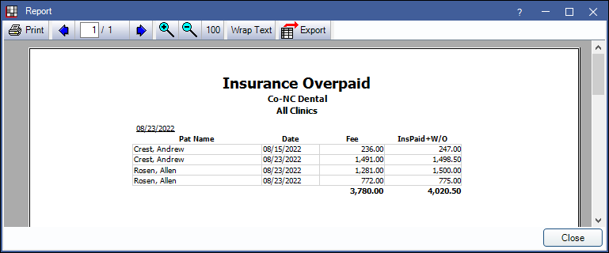

Insurance Overpaid Report
The Insurance Overpaid Report finds situations where the insurance payment, plus any write-off, exceeds the procedure fee.
In Standard Reports, in the Monthly section, click Insurance Overpaid.

The purpose of this report is to identify situations where it may be necessary to adjust procedure fees to account for what insurance companies are paying. To resolve overpayments on procedures one-by-one, use the Procedures Overpaid Report instead.
To control user access to this report, see Report Setup: Security Permissions.
Filters
Calendar: Select the date range to run the report. Select the start date in the left calendar and the end date on the right calendar. Filters by procedure date.
Clinics: Select clinics to include in the report. Ctrl + click to select multiple clinics or check All (includes hidden) to include all clinics, including those marked hidden.
- Filters clinic assigned to procedure.
- If user is restricted to specific clinics, only accessible clinics will list. When checking All (includes hidden), results will include all clinics user has access to, including those marked hidden; results do not include clinics user is restricted from or procedures not assigned to a clinic.
Filter Options:
- Filter results by procedure: Group the report by procedure.
- Filter results by patient and date: Group the report by patient and date. Patients will only be included if their total fees for all procedures completed on the same date were overpaid.
Report Preview
Click OK to generate a print preview the report. Below is an example of the report and explanation of the report columns. For a description of toolbar buttons, Complex Report System.
- Pat Name: Patient name.
- Date: Procedure date.
- Fee: When Filter results by procedure is selected, this is the individual procedure fee. When Filter results by patient and date is selected, this is the total fees billed for the date.
- InsPaid+W/O: Insurance payment and write-offs total.
Troubleshooting
To handle the items on this list, find the original EOBs and verify.
Fixing Old Payment Amounts: It is unlikely that an entry error of the payment amount would have been the cause, because the daily deposit slip would not have balanced and the bank would have rejected the deposit. It is difficult to fix this kind of entry error. It will involve deleting the old deposit slip and the old insurance payment (not the claim procedure or the claim). Then, after fixing the payment amount, the insurance check and deposit would be recreated.
Fixing Old Write-offs: Add supplemental payments for the necessary procedures and correct the write-offs by adding negative write-off amounts.
Sending a Refund: If insurance truly did overpay, they must be notified so that a refund can be arranged. Open the claim, highlight the involved procedures, and click the Supplemental button at the upper right. Enter negative payment amounts. Create an insurance payment with a negative amount. This properly fixes the patient account and makes the patient responsible for the previous overpayment. If the overpayment was discovered after an unreasonable amount of time, the office has the option of entering a patient adjustment to not make the patient responsible.